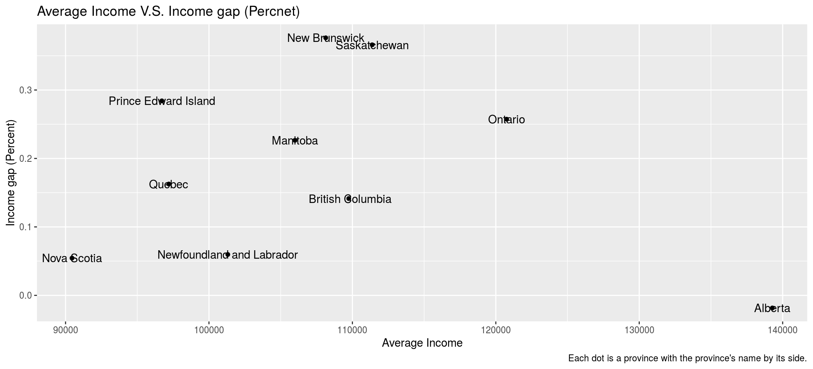

Abstract
I investigated in CES 2019 Phone sruvey dataset. I expect more developd provinces with higher average income do better in gender equality. Performed data diagnistics, and results showed surprisingly otherwise.
Introduction
Gender inequality is one of the many social problems that our modern society still not able to resolve. It is necessary for us to find out what factors are related to this problem so that we may eventually get rid of this issue. I start with a hypothesis that this problem can be eased by the growth of modern technology industry like software engineering and data mining which usually concentrate in big cities with higher incomes. By investigate the CES 2019 Phone survey data, the result shows another. Apart from the outlier, Alberta, the data for other provinces show a trend that with higher average income comes with the bigger gaps between genders.
Above is a graph of average income of different provinces. Based on my hypothesis Alberta, Ontario and Saskatchewan should do better in gender equality than Nova Scotia, Prince Edward Island and Quebec.
We then take a look at the distribution of the income. It is right skewed. Let’s make more graph to find out if my hypohtesis holds or not.
Emm, not what I expected. But literal number of the income gap between genders may not be a measure since different province varies a lot in average income.
Therefore, I propose a new measure for measuring the income gap. I call it the Income gap (amount), which is the average male income of a province subtracts the average female income of that province and divide the result with the average femal income of that province. This will translate amount to propotion which should show a better image of the gender inequality issue.
The result of the proportional difference is still not what I expect. It seems that the more developed province are actually doing worse. Nova Scotia, the province with the lowest average income, is the second best here in improving gender equality. However the result is still kind of messy here as there are some more developed provinces doing good and some not doing good. Maybe the use of barplots is not a use here. Let’s try scatter graph.

The varaibles I focused on are Income gap(Percent) and Average Income. Now the image is much clearer. We can see there is a over trend of higher income, bigger income gap between gender which is the polar opposite of my hypothesis. In fact, this seems to be a good oppotunity to use the model of linear regression.
After removing the Alberta, the outlier, we can see that we might abandon the old hypothesis and make a new hypothesis that the hihger the average income of a province is, the worse they perform in the field of gender equality.
Discussion
I think this exploration has yield some interesting results. On paper, we might say that more developed provinces are less equal between the two genders. However, this might due to survivorship bias that female in more developed provinces are more likely to find a job and therefore do not need to be a house wife.
In order to find out if the suvivorship bias is true here, future survey may need to look at female participation rate in the local labour force. If the participation rates in more developed provinces are higher, then the suvivorship bias is true.
Weaknesses and next steps
The weakness of this exploration is there are too few data point. There are only 4021 data point in the original dataset. After filtering out some outliers, the dataset I use only contain 2963 data points. I think one way to improve this exploration is to have more data points.
References
Stephenson, Laura B; Harell, Allison; Rubenson, Daniel; Loewen, Peter John, 2020, ‘2019 Canadian Election Study - Phone Survey’, https://doi.org/10.7910/DVN/8RHLG1, Harvard Dataverse, V1, UNF:6:eyR28qaoYlHj9qwPWZmmVQ== [fileUNF]
Stephenson, Laura, Allison Harrel, Daniel Rubenson and Peter Loewen. Forthcoming. ‘Measuring Preferences and Behaviour in the 2019 Canadian Election Study,’ Canadian Journal of Political Science.
JJ Allaire and Yihui Xie and Jonathan McPherson and Javier Luraschi and Kevin Ushey and Aron Atkins and Hadley Wickham and Joe Cheng and Winston Chang and Richard Iannone (2020). rmarkdown: Dynamic Documents for R. R package version 2.3. URL https://rmarkdown.rstudio.com.
Yihui Xie and J.J. Allaire and Garrett Grolemund (2018). R Markdown: The Definitive Guide. Chapman and Hall/CRC. ISBN 9781138359338. URL https://bookdown.org/yihui/rmarkdown.
Paul A. Hodgetts and Rohan Alexander (2020). cesR: Access the CES Datasets a Little Easier.. R package version 0.1.0.
-Tierney N (2017). “visdat: Visualising Whole Data Frames.” JOSS, 2(16), 355. doi: 10.21105/joss.00355 (URL: https://doi.org/10.21105/joss.00355), <URL: http://dx.doi.org/10.21105/joss.00355>
Elin Waring, Michael Quinn, Amelia McNamara, Eduardo Arino de la Rubia, Hao Zhu and Shannon Ellis (2020). skimr: Compact and Flexible Summaries of Data. https://docs.ropensci.org/skimr (website), https://github.com/ropensci/skimr.
Wickham et al., (2019). Welcome to the tidyverse. Journal of Open Source Software, 4(43), 1686, https://doi.org/10.21105/joss.01686